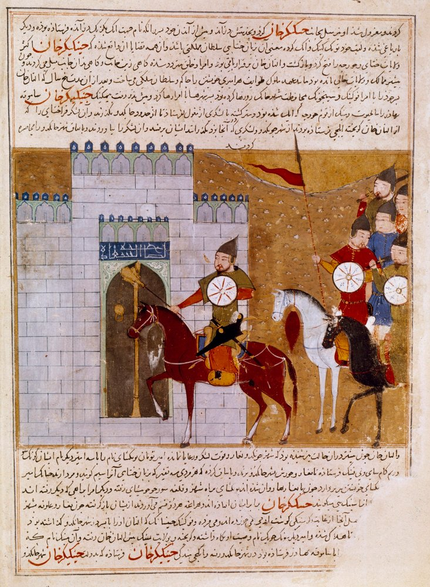

Ten Thousand Horses
She never lost a wrestling match — and the world is just a bigger ring.

Ten Thousand Horses
She never lost a wrestling match — and the world is just a bigger ring.
Feature map
Level-by-level features, as the figure refined them.
Issue the Wager
Bonus Action · 1 CE.
Challenge one creature within 30 ft that understands the offer — it may refuse, with no magical penalty. If accepted, both name one Minor Stake (10 ft speed, +1 AC, 5 max HP, a proficiency, +1 with a named weapon, advantage on a named skill) and a contest form — normally wrestling: first to 2 opposed-Athletics victories. The loser transfers the named stake to the winner, held until the winner's next long rest or lost in a later wager.
No Empty Wager
Passive.
The technique rejects worthless, suppressed, or battlefield-meaningless stakes; the challenged party gets one renegotiation. A 'yes' taken by compulsion, deception about the stakes, or any pressure that removes the genuine power to refuse is not acceptance — the wager is rejected.
Major Stakes
Passive.
Unlocks Major Stakes: damage resistance, a 30-ft movement mode, one extra Reaction per round, one limited-use non-Domain feature, Powerful Build. Never valid: technique ownership, Domains, Maximums, souls, lives, ability scores.
Champion's Purse
Passive.
Keep up to PB won Stakes until your next long rest, and risk them in later wagers. If you lose, the winner takes your stake plus one of your retained Stakes. Using won Stakes (per zack's ruling): passive Stakes (speed, AC, resistance, movement modes, Powerful Build, the extra Reaction) apply automatically while held. A won limited-use feature may be used once before your next long rest, using your action and your own CE at your technique DC. Stakes won beyond the PB cap cannot be retained — they must be immediately re-wagered or forfeited.
Undefeated Until Proven Otherwise
Once per challenge · free.
After losing a contest roll, you may offer to double the wager: if the opponent accepts, the loss is erased and the challenge continues at doubled stakes; if they refuse, the loss stands.
Maximum, Domain, or equivalent.
Capstone material.
The Ten-Thousand-Horse Wager
One Grand Challenge to a willing opponent: Grand Stakes (table-approved), every retained Stake on the table, first to 3 victories. The winner holds everything for 24 hours. Refusal is always legal.
The Horses Are Never Taken
Won Stakes no longer expire at a long rest — they persist until lost in a wager. Your Purse capacity becomes 2 × PB. No one ever took her horses; no one ever takes yours, except across the ring.
Build-defining options.
Historical-figure techniques grant no feats — the figure's art is complete as written, and the builder's feat picker excludes these techniques. Take the progression as the build.